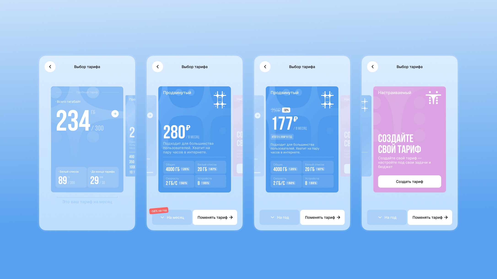
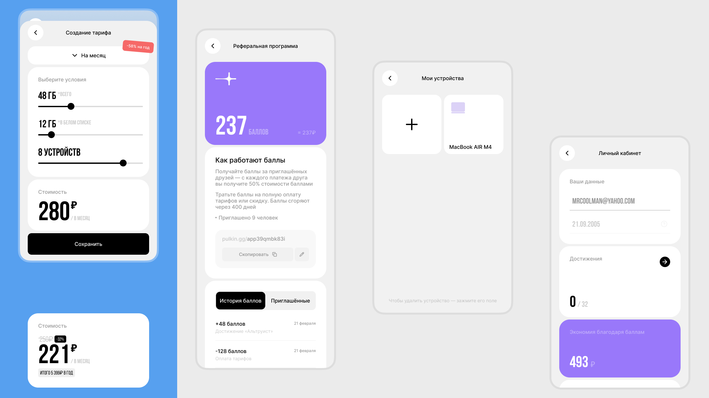
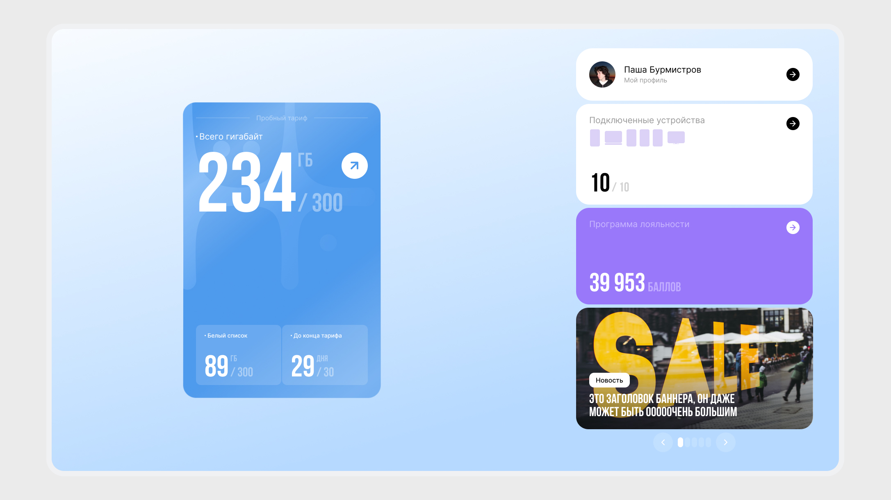
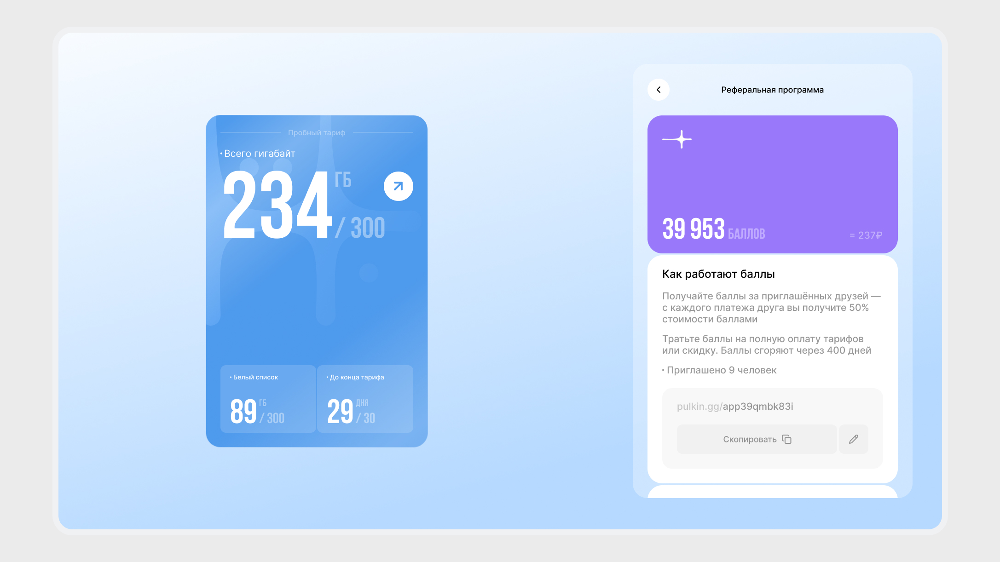
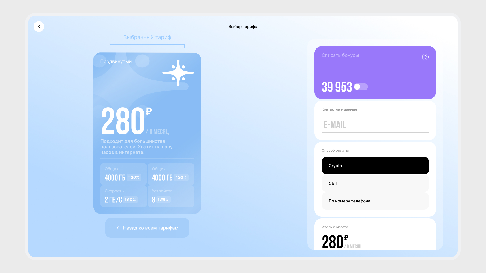
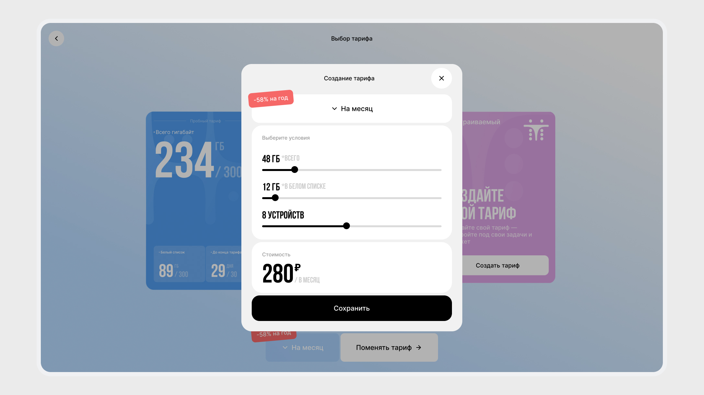

Нарисовал mini-app в телеграме, где пользователи могут отслеживать свой тариф, управлять программой лояльности и подключать новые устройства.
Тарифы представлены как карточки, визуал которых меняется в зависимости от того, подключён тариф или нет. Реализовано бесшовное управление тарифами прямо с главного экрана.
Также мобильная версия была адаптирована под десктоп, а весь интерфейс имеет тёмную тему.
Designed a mini-app inside Telegram, where users can track their plan, manage the loyalty program, and connect new devices.
Plans are presented as cards, whose visuals change depending on whether the plan is active or not. Implemented seamless plan management right from the home screen.
The mobile version was also adapted for desktop, and the entire interface has a dark theme.





